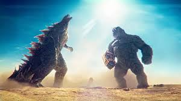

Godzilla
Introduction
Godzilla, the iconic Japanese movie monster, has captivated audiences around the world for over six decades. First appearing in 1954, Godzilla was created by Toho Co. Ltd. as a representation of nuclear fear and the destructive potential of technology. Originally conceived by director Ishirō Honda, Godzilla quickly became a symbol of post-war anxiety and has since evolved into a global cultural phenomenon.
The Origins of Godzilla
The original 1954 film, Gojira, was born from the aftermath of World War II and the atomic bombings of Hiroshima and Nagasaki. The creature, Godzilla, emerged from the depths of the ocean as a result of nuclear testing, a metaphor for humanity’s reckless interference with nature. Its destructive force mirrored the terror of nuclear warfare, and the film itself was both a disaster movie and a commentary on the dangers of unchecked scientific progress. Godzilla's rampage through Tokyo resonated with viewers and immediately became a pop-culture staple. Over time, Godzilla's character evolved, shifting from a force of destruction to a more heroic figure battling other giant monsters or "kaiju."
A Global Phenomenon
Godzilla's popularity spread internationally, with films becoming a cultural touchstone for fans of giant monsters and Japanese cinema. The franchise has spanned over 30 films, numerous television shows, video games, comic books, and even an animated series. With a rich history, Godzilla remains one of the most influential creatures in film history.